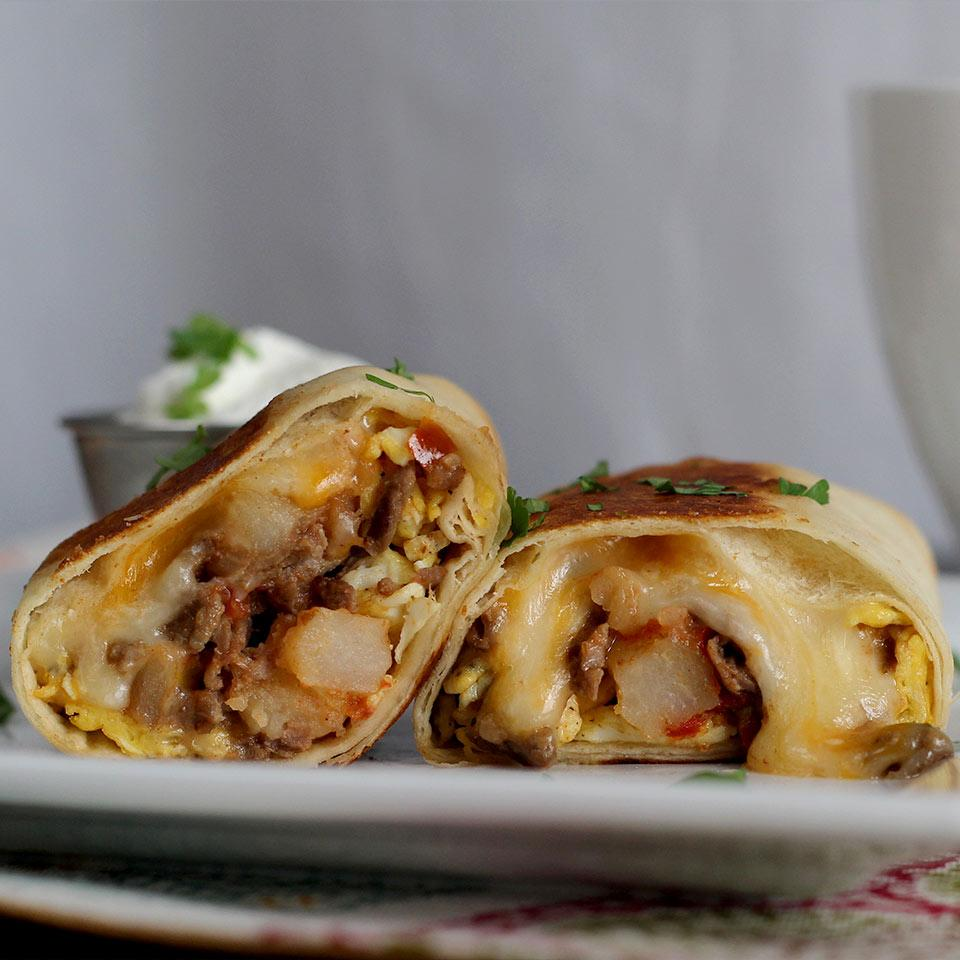

Burrito

Description
The mission burrito is well known for its comical size and heft, stuffed with things like grilled meat, rice, beans, and an array of condiments. Though it comes from San Francisco's Mission District, this taqueria burrito is now consumed all over the Bay Area and beyond via taqueria-inspired chain restaurants like Chipotle.
Many of my high school years in the San Francisco Bay Area were spent persuading my mom to stop by our local taqueria, El Balazo, for dinner so I could order a steak burrito, super. For a couple dollars extra, the mountain of burrito got slathered with extra guacamole, cheese, and a blanket of sour cream. There was always something joyful about watching my overstuffed burrito get tightly wrapped, most of the time with two sheets of foil to keep it from bursting at the seams.
Ingredients
- 2 pounds beef skirt steak, cut into thin strips
- 2 tablespoons carne asada seasoning
- 1 tablespoon garlic powder
- 1 tablespoon vegetable oil
- ½ sweet onion, diced
- 1 red bell pepper, seeded and chopped
- 1 jalapeno pepper, seeded and diced
- 1 (14.5 ounce) can Hunt's® Diced Tomatoes, drained
- 2 cups frozen diced potatoes
- salt and pepper to taste
- 3 tablespoons butter, divided
- 6 eggs, whisked
- 2 cups shredded Mexican cheese blend
- 4 (12 inch) flour tortillas
-
Place beef slices in a mixing bowl. Sprinkle with asada seasoning and garlic powder; toss in bowl to evenly coat. Let marinade 5 minutes.
-
Heat oil in a large, deep skillet over medium-high heat. Place beef strips in skillet and cook and stir until browned. Stir in bell pepper, onions, and jalapeno pepper. Add tomatoes and potatoes. Cook mixture until potatoes are tender, 5 to 8 minutes. Season with salt and pepper. Transfer mixture to a bowl.
-
Melt 1 tablespoon butter in the same skillet. Add the eggs, stirring occasionally, until eggs are scrambled and set. Transfer the beef mixture back to skillet. Cook and stir until warmed through, about 2 minutes. Melt the remaining 2 tablespoons butter in a small dish in microwave.
-
Divide shredded cheese among tortillas; divide beef and veggie mixture and place on the cheese. Fold in sides of tortilla and roll up. Brush with melted butter and place folded side down in pan to brown; flip and brown on top side. Burrito should be warmed though.